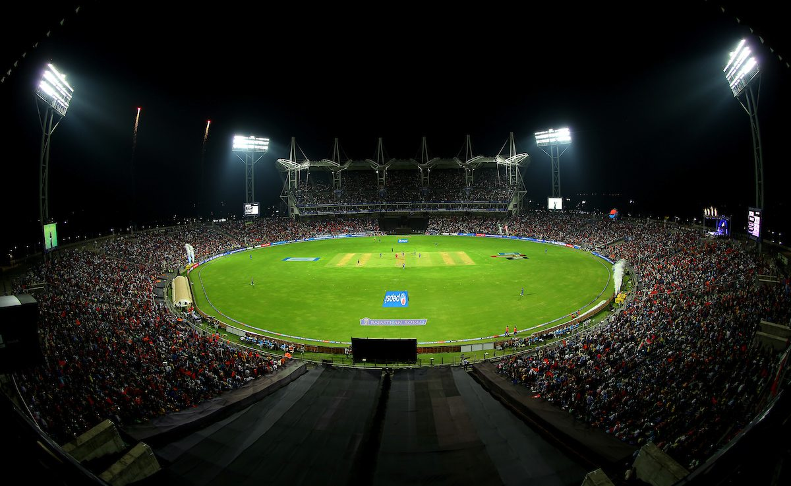

Use the payment QR provided inside the registration form.
TENUGHAT’S NEXT CRICKET CHAPTER
FOR THE LOVE
OF THE GAME.
Urmila Gupta Memorial
Cricket Tournament Season 2
Bring your game to Tenughat Golden Jubilee Ground. Play through the day. Chase the trophy under the lights.
Registration: 24 Nov – 20 Dec 2026

SEASON02
THE ROAD TO THE FINALDaytime battles.
A night to remember.
Representative stadium image
A night to remember.
Day matches · Final under lights
ONE GROUND. ONE GAME. ONE UNFORGETTABLE FINAL. SEASON 2 TENUGHAT CRICKET COMES ALIVE.
THE TOURNAMENT
Your ground.
Your moment.
Everything you need to know before you step up and register.
2026 · Submit your completed form by 20 December.
Golden Jubilee Ground
Find the ground on MapsDay matches. Night final.
FINALE UNDER LIGHTSThe tournament matches will be played during the day. The final will be held at night. Match dates and fixtures will be announced by the organisers.
FROM FORM TO FIELD
Get match-ready.
A few details. One registration.
Your next cricket chapter starts here.
Introduce yourself
Enter your full name, age, contact details, address and player role in the registration form.
Complete your player profile
Upload a clear player photograph and select your preferred T-shirt size. Check all details carefully.
Pay & submit
Pay ₹150 using the QR in the form, upload your payment slip and submit your registration.
अपनी सही जानकारी भरें, ₹150 का भुगतान करें और पेमेंट स्लिप अपलोड करके फॉर्म सबमिट करें।
PLAYER REGISTRATION
The next innings
starts with you.
Complete the official registration form below. Your details, player photo and payment slip will be submitted directly through the organiser’s Google Form.
Registration fee₹150
Keep these ready
- Your personal and contact details
- A clear player photograph
- Your player role and T-shirt size
- ₹150 payment receipt or screenshot
Registration window: 24 November – 20 December 2026. Payment and participation confirmation are subject to the organiser’s verification.
OFFICIAL APPLICATION
Google FormsPlayer registration form
BEFORE YOU APPLY
A few good
questions.
Know the details.
Focus on your game.
What is the registration fee?
The player registration fee is ₹150. Scan the payment QR inside the official Google Form, pay the fee and upload a clear payment receipt or screenshot.
When can I register?
Registration starts on 24 November 2026. The last date to submit your completed registration form is 20 December 2026.
Where will the tournament be played?
The tournament venue is Tenughat Golden Jubilee Ground. Matches will take place during the day, with the final played at night. The organisers will announce the match schedule separately.
Why is the form asking me to sign in?
Google may require you to sign in for photo and payment-slip uploads. If the embedded form does not load or allow uploads, use “Open Google Form” to continue in a new tab.
Is my place confirmed after payment?
The organisers will review your application and verify the payment. Submitting the form and payment receipt does not by itself confirm selection or participation.
URMILA GUPTA MEMORIAL · SEASON 2
Make this season
your season.
Start your registration24 November – 20 December 2026 · ₹150 per player